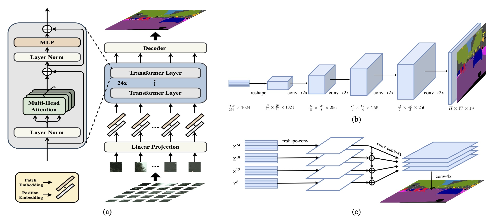
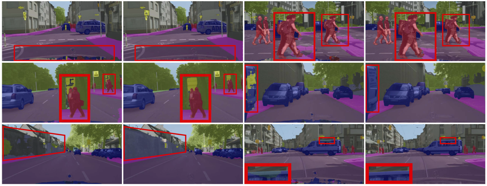
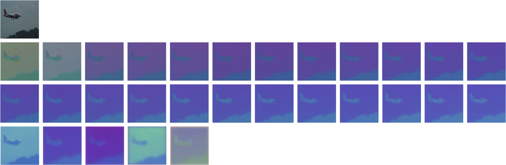
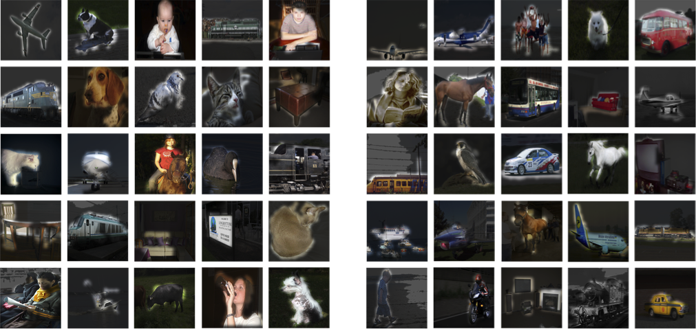
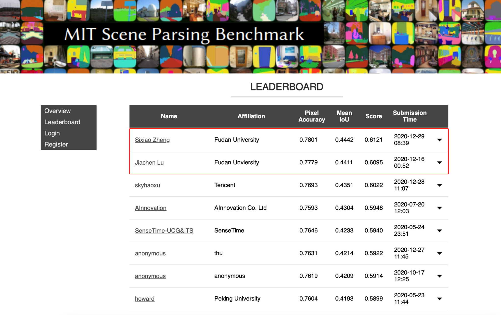

Rethinking Semantic Segmentation from
a Sequence-to-Sequence Perspective
with Transformers
Sixiao Zheng1
Jiachen Lu1
Hengshuang Zhao2
Xiatian Zhu3
Zekun Luo4
Yabiao Wang4
Yanwei Fu1
Jianfeng Feng1
Tao Xiang3,5
Philip H.S. Torr2
Li Zhang1 †
1Fudan University 2University of Oxford 3University of Surrey 4Tencent Youtu Lab 5Facebook AI
Paper Code
Abstract
Most recent semantic segmentation methods adopt a fully-convolutional network (FCN) with an encoder-decoder architecture. The encoder progressively reduces the spatial resolution and learns more abstract/semantic visual concepts with larger receptive fields. Since context modeling is critical for segmentation, the latest efforts have been focused on increasing the receptive field, through either dilated/atrous convolutions or inserting attention modules. However, the encoder-decoder based FCN architecture remains unchanged. In this paper, we aim to provide an alternative perspective by treating semantic segmentation as a sequence-to-sequence prediction task. Specifically, we deploy a pure transformer (ie, without convolution and resolution reduction) to encode an image as a sequence of patches. With the global context modeled in every layer of the transformer, this simple encoder can be combined with a decoder in simple design to provide a powerful segmentation model, termed SEgmentation TRansformer (SETR). Extensive experiments show that SETR achieves new state of the art on ADE20K (50.28% mIoU), Pascal Context (55.83% mIoU) and competitive results on Cityscapes. Particularly, we achieve the first (44.42% mIoU) position in the highly competitive ADE20K test server leaderboard.




